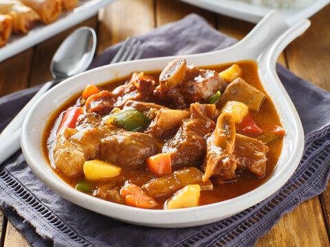
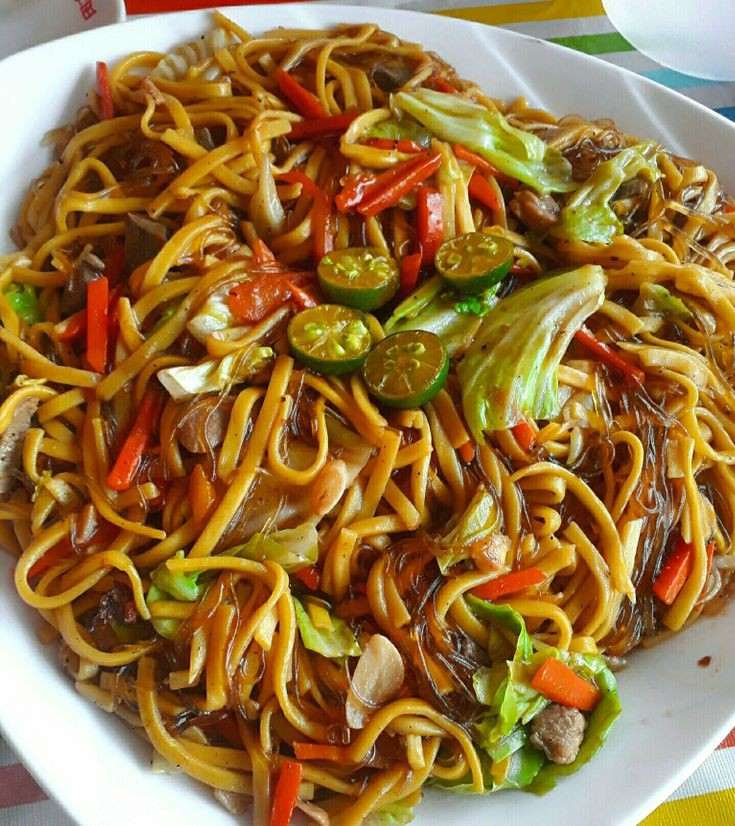
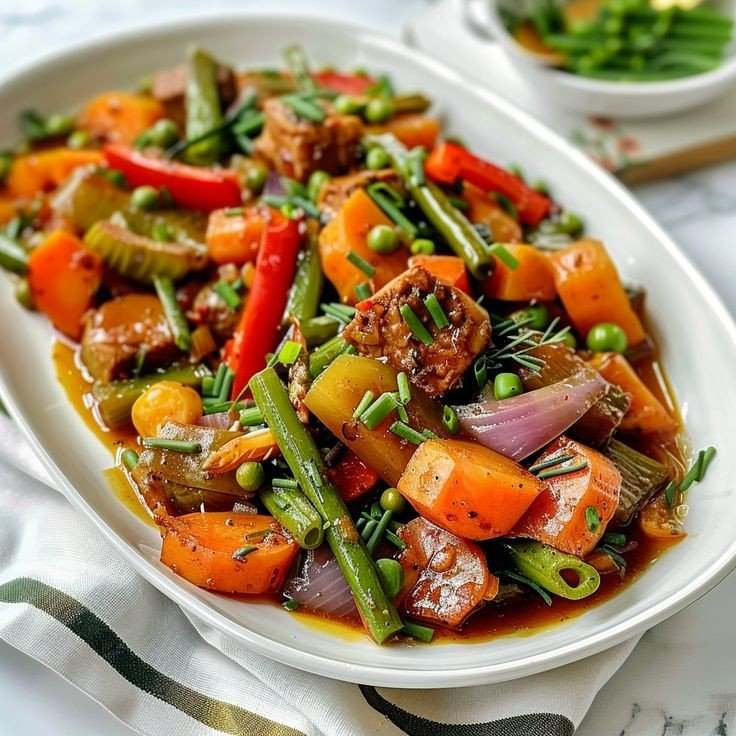
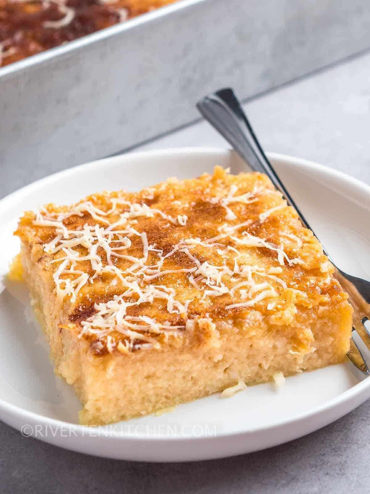
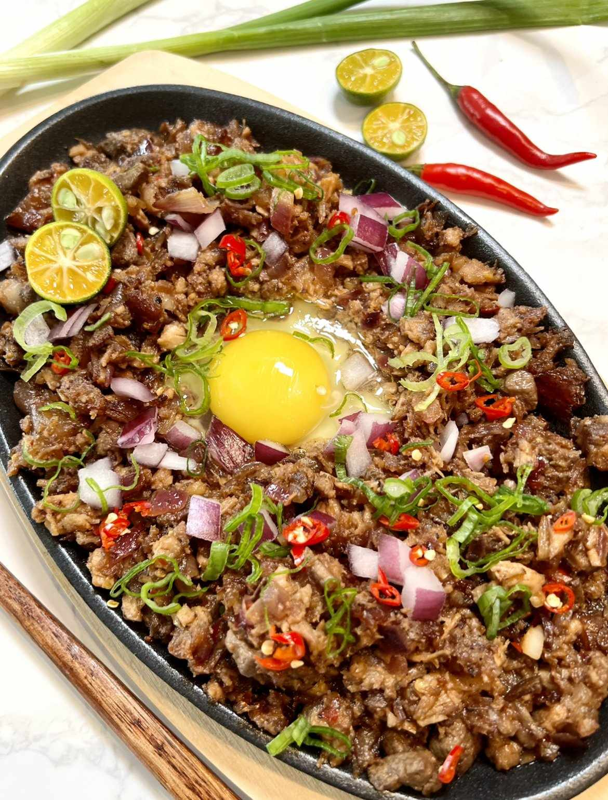
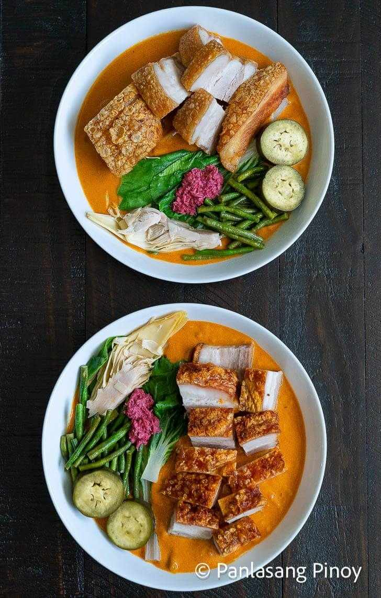
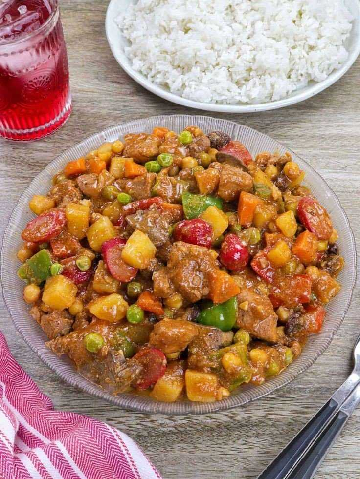
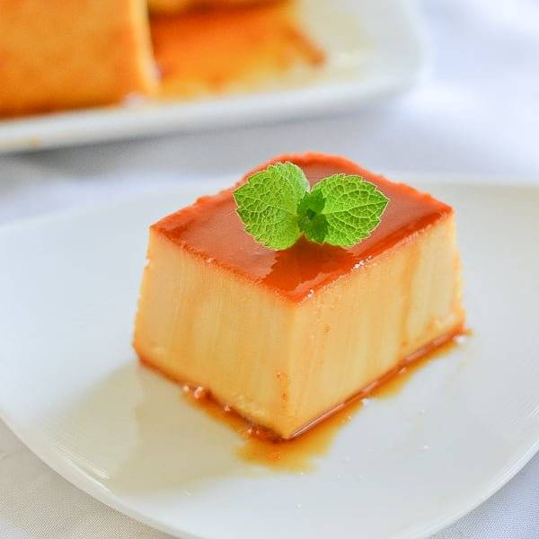
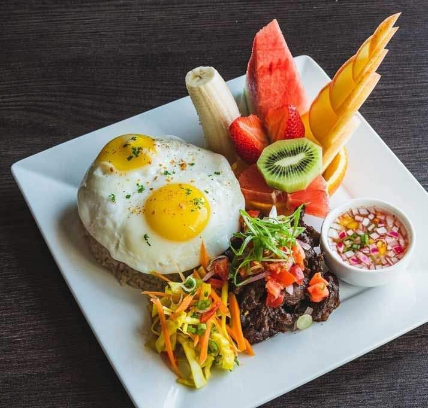

You might also like:
LUMPIA
A Filipino spring roll,either fried or fresh,filled with meat,vegetables,or sweet ingredients like bananas.
ADOBO
A savory stew made with meat or sea foods,vinegar,soy souce,garlic,and bay leaves.
PANCIT MIKI-BIHON
A stir-fried noodle dish made with a combination of egg noodles(miki)and rice noodles(bihon),mixed with vegetables,meat and spices.
PINAKBET
A mixed vegetable dish made with eggplant,tomatoes,okra,and bok choy,cooked in a fermented fish paste.
CASSAVA CAKE
A sweet dessert made with grated cassava,coconut milk,and sugar,topped with a caramelized sugar crust.
PORK BELLY SISIG
A popular appetizer made from chopped grilled pork belly,mixed with onions,chili pepper,and vinegar.
KARE-KARE
A peanut-based stew made with ox tripe,,vegetables,and ground rice.
KALDERETA
A hearty beef stew cooked in tomato sauce with vegetables and liver paste.
LECHE PLAN
A rich and creamy FIlipino caramel custard dessert made with eggs,milk,and sugar,steamead to perfection
TAPSILOG
A popular breakfast dish made with cured beef,garlic fried rice,and fried egg.